Oil Level Tracker 사용 설명서
압축기 사이트글라스 영상 하나로 유면 판정 보고서를 만드는 앱입니다. 이 설명서는 앱을 처음 쓰는 검사자를 위해 썼습니다. 처음이라면 빠른 시작을 한 번 따라 해 보고, 필요한 기능은 각 장에서 찾아보세요.
단축키와 마우스 조작은 앱의 각 화면에서 F1을 누르면 나오는 도움말에 모두 있습니다. 이 설명서의 화면은 유리컵에 우유를 붓는 예시 영상으로 찍었습니다. 사이트글라스 영상에서도 조작은 같습니다.
1. 시작하기 전에
앱이 하는 일, 검사자가 하는 일
- 앱은 영상을 한 번 읽어 Glass마다 맥락 이미지를 만들고, Oil 선 초안을 그리고, 판정 규칙에 따라 판정을 계산합니다. 제출하면 보고서를 만듭니다.
- 검사자는 Oil 선이 맥락 이미지 속 유면 경계를 따라가는지 보고, 틀린 곳을 고칩니다. 판정을 확인하고 제출합니다. 선의 위치와 최종 판정은 검사자가 정합니다.
초안은 자주 틀립니다. 거품 경계나 움직이지 않는 띠를 따라가기도 하고, 경계가 약한 곳은 비워 둡니다. 그래서 모든 검사는 선을 보고 고치는 편집을 거칩니다.
쓰는 말
| Recipe | 장비와 카메라 배치마다 한 번 만드는 설정입니다. Glass 위치, 0선, 판정 규칙을 담고, 같은 장비의 검사에 계속 씁니다. |
|---|---|
| Glass | 영상에서 유면을 볼 사이트글라스 하나입니다. 타원으로 표시합니다. Recipe 하나에 Glass가 여럿일 수 있습니다. |
| 0선 | 판정의 기준 높이입니다. 그래프의 세로축은 0선에서 잰 높이(원본 영상의 px, 위가 +)입니다. |
| 맥락 이미지 | Glass 가운데 띠를 시간 순으로 이어 붙인 그림입니다. 가로가 시간, 세로가 Glass 안의 높이라서 유면이 오르내린 자취가 경계로 보입니다. |
| Oil · Foam · 참조선 | 그래프와 맥락 이미지에 그리는 선입니다. 판정에는 Oil 선만 씁니다. Foam 선과 참조선은 보이기만 합니다. |
| 빈 구간 | Oil 선이 없는 곳입니다. 다시 그리기 전까지 무효 샘플이라, 잊고 지나친 곳이 합격으로 넘어가지 않습니다. |
| 판단 불가 | 검사자가 일부러 판정에서 뺀 구간입니다(빗금). 이것도 무효 샘플입니다. |
| FULL · EMPTY | Oil 선이 Glass 맨 위 / 맨 아래에 붙은 상태입니다. 유면이 Glass 밖으로 나가 경계가 보이지 않을 때 씁니다. |
| 압축기 기동 | 압축기가 켜진 시각입니다. 기준점 회복 판정은 이 시각부터 잽니다. |
첫 화면: 검사 목록
앱을 열면 검사 목록이 나옵니다. 검사마다 한 줄이고, 더블클릭하거나 "열기"로 엽니다. 분석이 끝난 검사는 편집기가, 아니면 분석 설정이 열립니다.
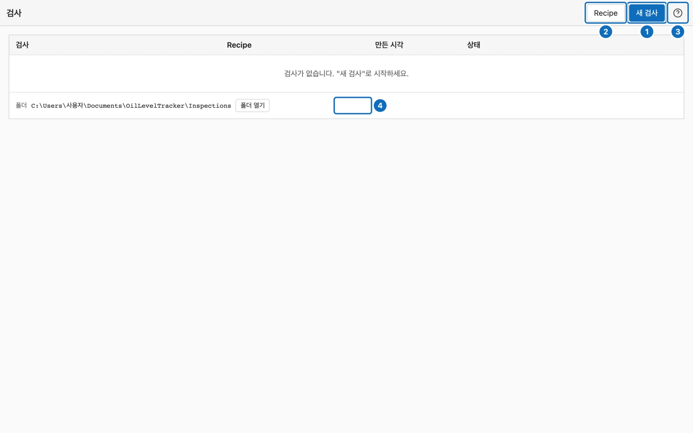
- "새 검사": 영상을 골라 검사를 시작합니다(4장).
- "Recipe": Recipe 목록으로 갑니다(3장).
- 도움말: 그 화면의 키와 마우스 조작을 보여 줍니다. F1이나 ?로도 엽니다. 도움말 창의 "사용 설명서"를 누르면 이 설명서가 열립니다.
- "폴더 열기": 검사 폴더가 있는 곳을 탐색기로 엽니다.
데이터가 있는 곳
모든 데이터는 그 PC의 문서 폴더 아래 OilLevelTracker 폴더에 있습니다. 검사 목록과 Recipe 목록의 "폴더 열기"로 탐색기에서 열 수 있습니다.
Recipes\: Recipe 파일. 하나에이름.recipe.json파일 하나입니다.Inspections\: 검사마다 폴더 하나. Recipe 사본, 편집한 선, 맥락 이미지, 제출한 버전과 보고서가 들어 있습니다.
원본 영상은 복사하지 않고 위치만 기억합니다. 분석한 뒤 영상을 옮기거나 지우면 편집기가 경고합니다(9장). PC끼리 공유하지 않으므로, Recipe를 다른 PC에서 쓰려면 그 파일을 그 PC의 Recipes\ 폴더에 복사합니다.
2. 빠른 시작
처음부터 보고서까지 한 번 따라 해 보는 순서입니다. 자세한 내용은 각 장에 있습니다.
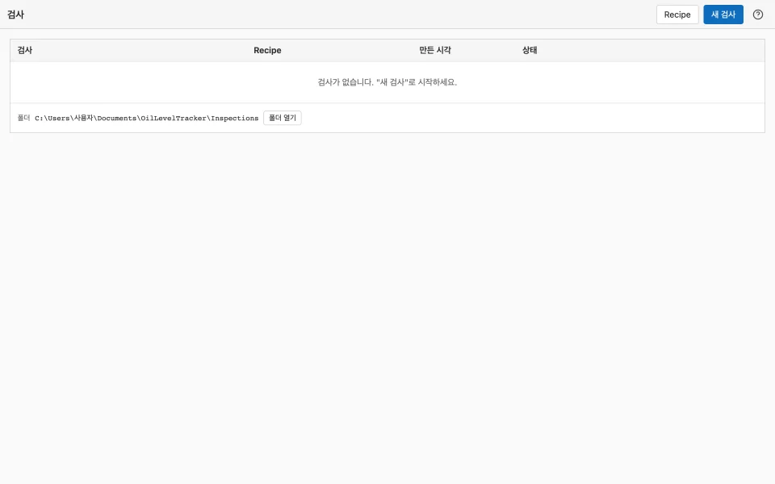
앱 열기 앱을 열면 검사 목록이 나옵니다.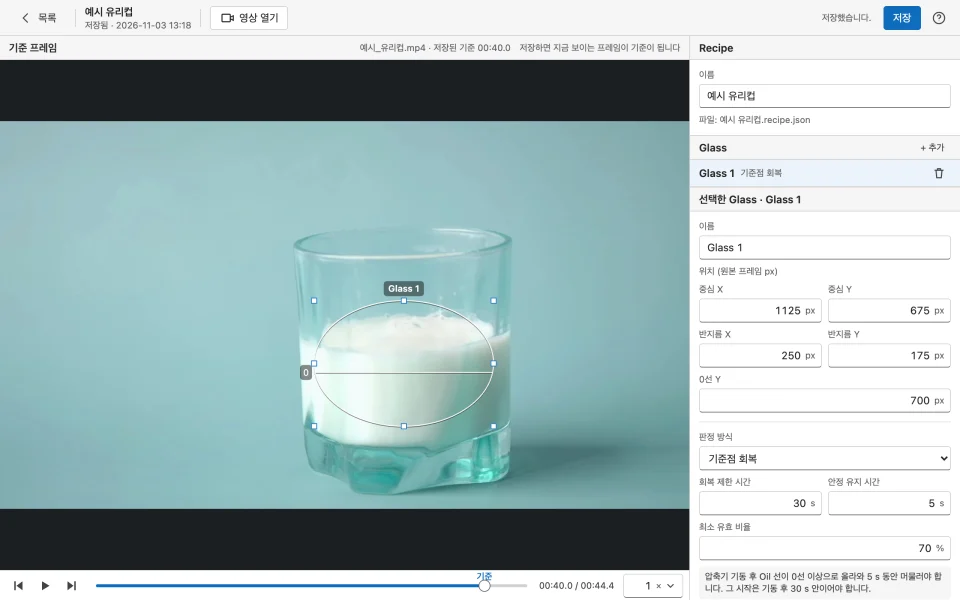
Recipe 만들기 장비마다 처음 한 번: "Recipe" → "새 Recipe" → 영상 고르기 → Glass 추가, 타원과 0선 맞추기 → 판정 규칙 → "저장". 3장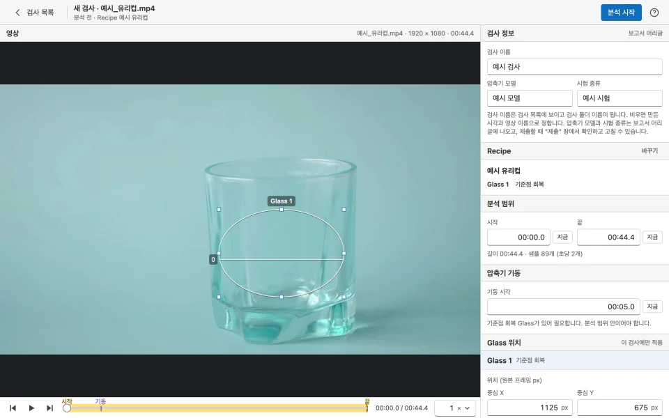
검사 시작 "새 검사" → 영상 → Recipe → 분석 범위와 압축기 기동 시각 → "분석 시작". 4장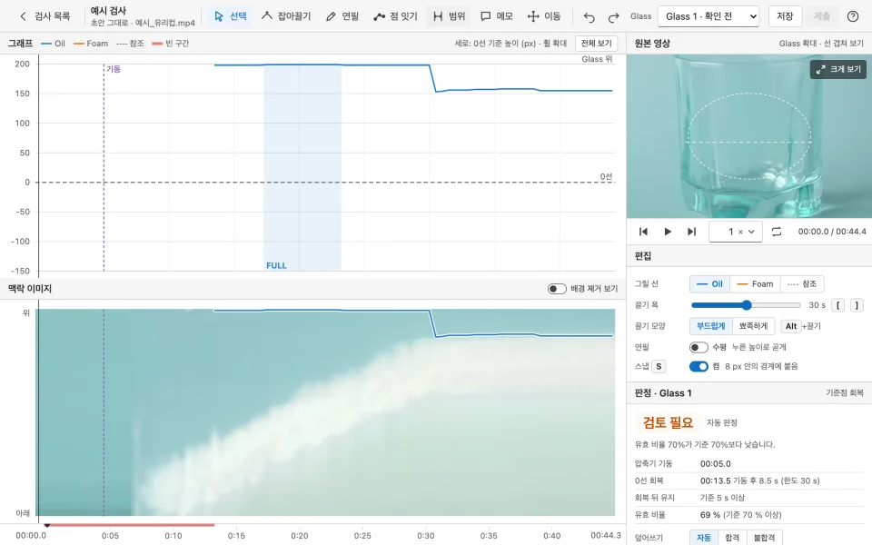
선 고치기 분석이 끝나면 편집기가 열립니다. Oil 선이 맥락 이미지의 경계를 따라가는지 보고, 틀린 곳을 지우고 다시 그립니다. 5장, 6장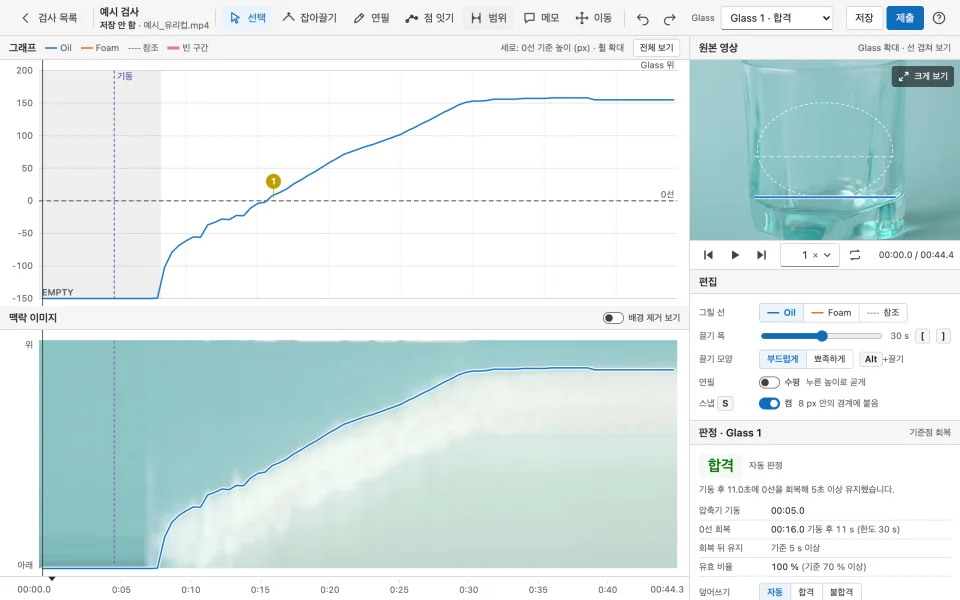
판정 확인 판정과 근거를 읽고 "이 Glass 확인"을 누릅니다. Glass마다 합니다. 7장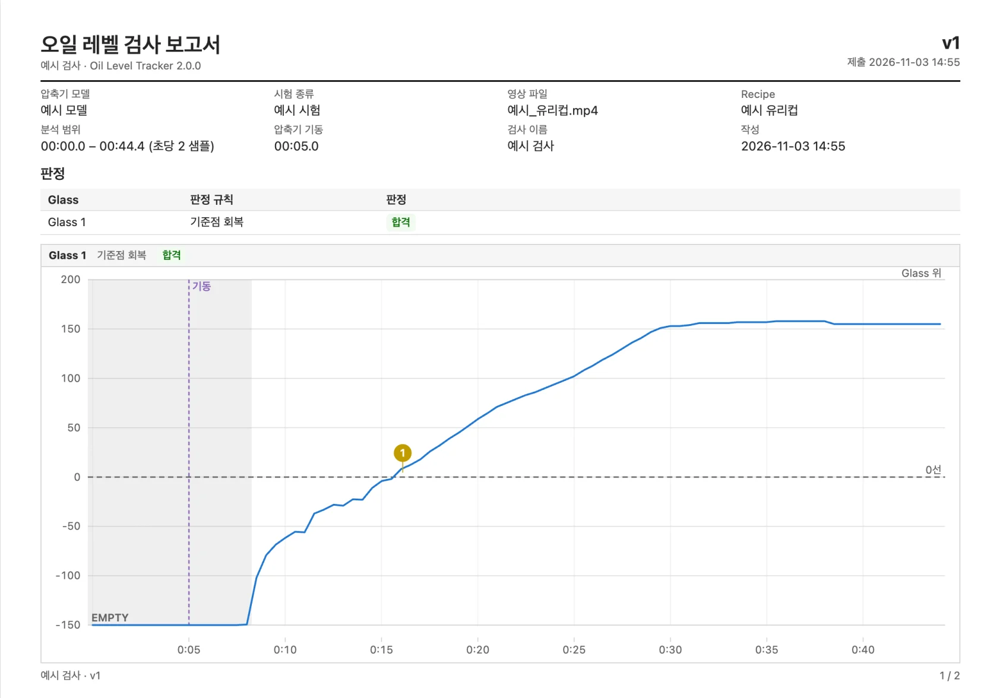
제출과 보고서 "제출"하면 버전이 잠기고 보고서가 만들어집니다. "보고서 열기"로 보고, 브라우저에서 인쇄하면 PDF가 됩니다. 8장
3. Recipe 만들기
Recipe는 장비와 카메라 배치마다 한 번 만듭니다. 카메라가 같은 자리에 있으면 그 장비의 다음 검사에도 그대로 씁니다. 검사 목록의 "Recipe"를 누르면 Recipe 목록이 나옵니다.
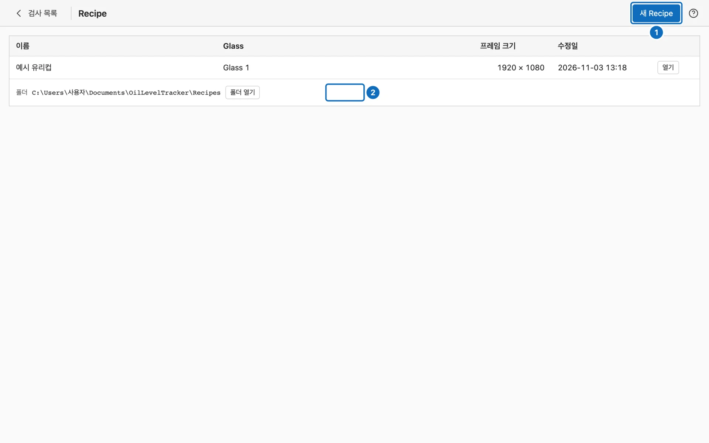
- "새 Recipe": 영상을 골라 새 Recipe를 만듭니다.
- "폴더 열기": Recipe 파일이 있는 폴더를 탐색기로 엽니다.
새 Recipe
- "새 Recipe"를 누르고 그 장비의 영상을 고릅니다.
- 이름을 넣습니다. 이름이 파일 이름이 됩니다.
- 아래 막대를 끌어 Glass가 잘 보이는 프레임을 찾습니다. 저장할 때 화면에 보이는 프레임이 기준 프레임이 됩니다.
- Glass의 "+ 추가"를 누릅니다. 화면 가운데에 타원이 생깁니다.
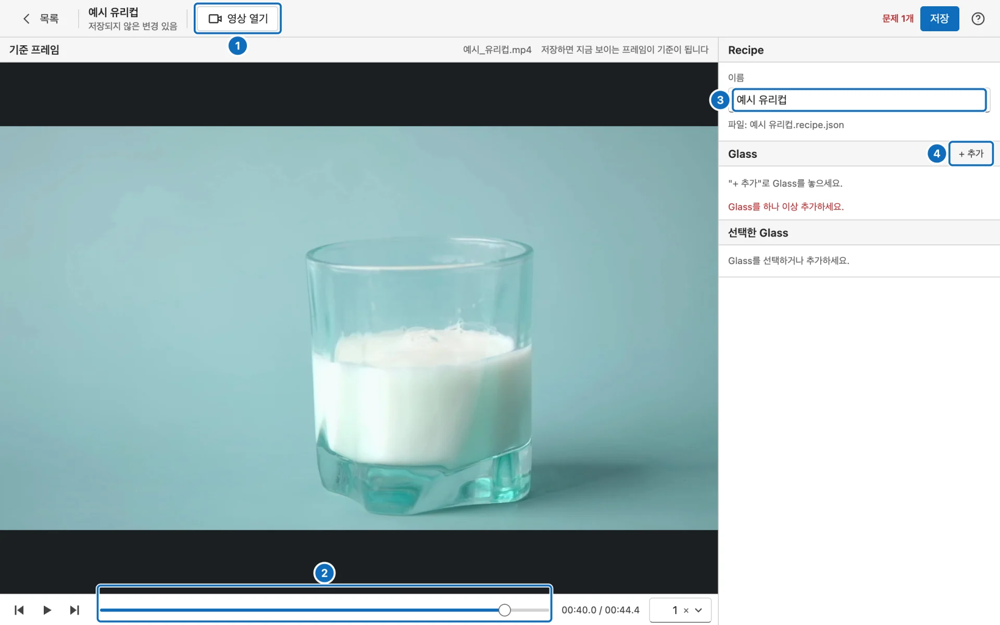
- "영상 열기": 다른 영상으로 바꿔 봅니다.
- 아래 막대: 끌어서 원하는 시각으로 갑니다. 왼쪽 단추로 재생하고, 오른쪽 칸에서 배속(0.1–16×)을 바꿉니다.
- Recipe 이름.
- "+ 추가": Glass를 하나 놓습니다. 사이트글라스가 여럿이면 여러 번 누릅니다.
Glass와 0선 맞추기
- 옮기기: 타원 안쪽을 끕니다. 0선도 함께 움직입니다.
- 크기: 손잡이 8개를 끕니다.
- 0선: 0선을 위아래로 끕니다. 타원 위·아래 끝에서 멈춥니다. 끝에 붙은 0선은 오른쪽 "0선 Y" 칸으로 옮깁니다.
- 미세 조정: ← → ↑ ↓로 1 px, Shift와 함께 10 px 옮깁니다. 오른쪽 숫자 칸에서 px 단위로 넣을 수도 있습니다.
- 보기: 휠로 확대·축소하고, Shift+끌기로 화면을 옮깁니다.
타원은 유면이 오르내리는 범위만 감싸게 그립니다. Glass 테두리, 반사, 유면과 상관없는 부분이 타원 안에 들어가면 초안이 그 경계를 잡기 쉽습니다.
판정 규칙
- 타원과 손잡이: 판정에 쓸 Glass 안쪽.
- 0선: 판정의 기준 높이.
- Glass 목록: 고른 Glass가 오른쪽 아래 칸에 나옵니다. 휴지통 단추로 지웁니다.
- 판정 방식: 고른 방식이 쓰는 값만 아래에 나옵니다.
- "저장".
Glass마다 판정 방식을 하나 고릅니다. 높이는 0선에서 잰 원본 영상의 px이고, 위가 +입니다. 판정은 Oil 선으로만 계산하고, Foam은 판정에 영향을 주지 않습니다.
| 판정 방식 | 합격하려면 | 쓰는 값 (기본값) |
|---|---|---|
| 기준점 회복 | 압축기 기동 뒤 Oil 선이 0선 이상으로 올라와 "안정 유지 시간" 동안 머뭅니다. 그 시작이 기동 후 "회복 제한 시간" 안이어야 합니다. | 회복 제한 시간 (120 s) 안정 유지 시간 (5 s) |
| 기준점 아래 유지 | Oil 선이 0선보다 "허용 높이" 넘게 올라간 상태가 가장 길게 이어진 시간이 "허용 시간" 이하입니다. | 허용 시간 (5 s) 허용 높이 (0 px) |
| 기준점 위 유지 | Oil 선이 0선보다 "허용 높이" 넘게 내려간 상태가 가장 길게 이어진 시간이 "허용 시간" 이하입니다. | 허용 시간 (5 s) 허용 높이 (0 px) |
모든 방식에 최소 유효 비율(기본 70 %)이 있습니다. 빈 구간과 판단 불가를 뺀 유효 샘플이 이 비율보다 적으면 판정은 "검토 필요"가 됩니다. 오른쪽 칸 아래에 고른 규칙이 문장으로 나오니, 저장하기 전에 읽어 봅니다.
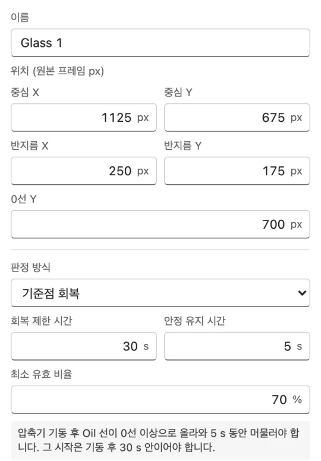
저장하기
- "저장"을 누릅니다. 빨간 글씨의 문제가 남아 있으면 저장되지 않습니다. 위쪽 "문제 N개"에서 남은 문제를 볼 수 있습니다.
- 영상을 열지 않고 저장하면 저장된 기준 프레임을 그대로 둡니다.
- Recipe를 고쳐도 이미 분석한 검사는 바뀌지 않습니다. 분석을 시작할 때 Recipe 사본을 검사 폴더에 저장하기 때문입니다.
- Recipe와 해상도가 다른 영상은 그 Recipe로 검사할 수 없습니다.
4. 검사 시작하기
영상과 Recipe 고르기
- 검사 목록에서 "새 검사"를 누르고 영상을 고릅니다.
- Recipe 고르기 창에서 그 영상의 장비에 맞는 Recipe를 고르고 "다음"을 누릅니다. 맞는 Recipe가 없으면 "이 영상으로 새 Recipe 만들기"를 누릅니다.
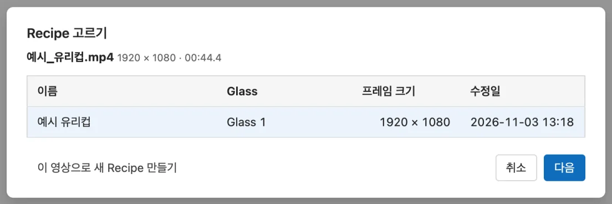
분석 설정
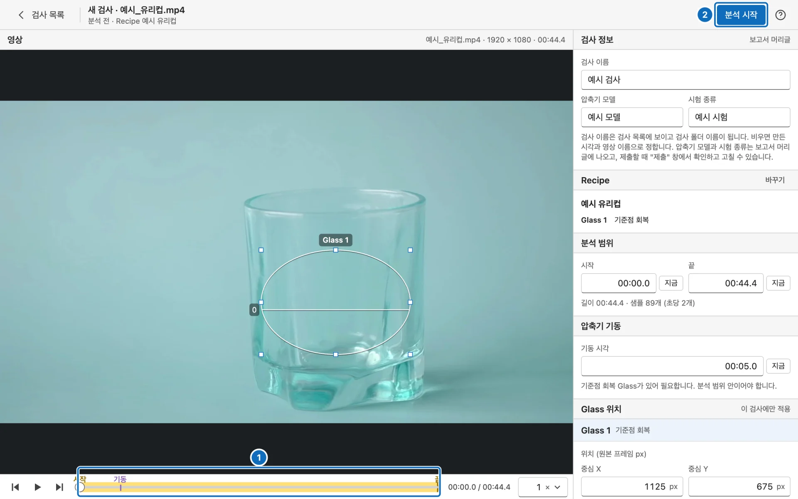
- 아래 막대: 분석 범위의 시작과 끝, 압축기 기동이 표시됩니다.
- "분석 시작": 문제가 남아 있으면 시작하지 않습니다.
- 검사 정보: 검사 이름은 검사 목록에 보이고 검사 폴더 이름이 됩니다. 비우면 만든 시각과 영상 이름으로 정합니다. 폴더를 만든 뒤에는 바꿀 수 없습니다. 압축기 모델과 시험 종류는 보고서 머리글에 나오고, 비워 두어도 됩니다. 제출할 때 다시 확인하고 고칠 수 있습니다.
- 분석 범위: 분석할 시작과 끝입니다. 영상을 보다가 "지금"을 누르면 화면의 시각이 들어갑니다. [ ]로 지금 시각을 시작 / 끝으로 넣을 수도 있습니다.
- 압축기 기동: 기준점 회복 Glass가 있으면 꼭 넣어야 하고, 분석 범위 안이어야 합니다.
- Glass 위치: 카메라가 Recipe를 만들 때와 조금 달라졌으면 여기서 타원과 0선을 옮깁니다. 이 검사의 Recipe 사본에만 저장됩니다. "Recipe 위치로 되돌리기"로 되돌립니다.
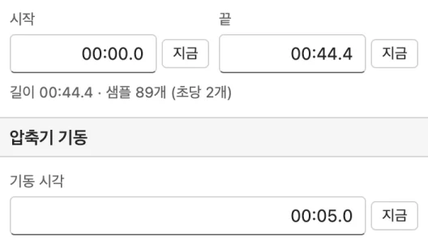
분석
"분석 시작"을 누르면 검사 폴더와 Recipe 사본을 만들고 영상을 한 번 읽습니다. 진행과 남은 시간이 나오고, 끝나면 편집기가 열립니다. 한 시간 남짓한 영상도 보통 몇 분이면 끝나고, 느린 PC에서는 더 걸립니다.
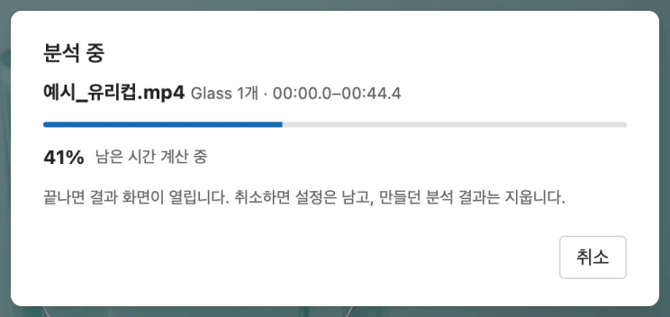
취소한 검사는 목록에 "분석 안 됨"으로 남습니다. 열어서 다시 시작할 수 있습니다.
5. 편집기 둘러보기
화면 구성
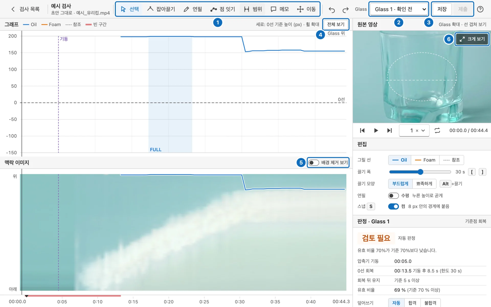
- 도구: 선택, 잡아끌기, 연필, 점 잇기, 범위, 메모, 이동. 그 오른쪽은 실행 취소와 다시 실행입니다.
- Glass 고르기: Glass마다 "확인 전" 또는 확인한 판정이 붙습니다.
- "저장"과 "제출".
- "전체 보기": 분석 범위 전체와 Glass 높이로 되돌립니다.
- "배경 제거 보기".
- "크게 보기": 원본 영상을 따로 띄운 창에서 봅니다.
- 그래프: Oil 선을 0선 기준 높이로 그립니다. 보라색 점선이 압축기 기동, 검은 점선이 0선입니다. FULL과 EMPTY 구간은 띠로 표시됩니다.
- 맥락 이미지: 같은 선이 그림 위에 겹쳐 그려집니다. 선이 그림 속 경계를 따라가는지 여기서 봅니다. 그래프와 시간축이 같습니다.
- 시간축: 아래의 빨간 막대는 빈 구간입니다.
- 원본 영상: Glass 부분을 키워 보여 주고, 선을 겹쳐 그립니다. 재생, 한 프레임씩 이동, 배속, 반복 재생이 있습니다.
- 편집: 그릴 선, 끌기 폭과 모양, 연필의 수평, 스냅. 범위나 선을 고르면 그에 맞는 단추가 이 칸에 나옵니다.
- 판정: 7장. 오른쪽 칸을 내리면 Glass 정보(편집 기록, 빈 구간, 판단 불가, 유효 비율)와 분석 정보가 있습니다.
보기 바꾸기
- 클릭: 선택 도구로 그래프나 맥락 이미지를 클릭하면 그 시각으로 가고, 원본 영상이 그 프레임을 보여 줍니다.
- 확대: 휠은 시간 방향, Shift+휠은 높이 방향으로 확대합니다.
- 이동: 이동 도구(H)나 Shift+끌기로 보이는 범위를 옮깁니다. 빈 곳을 그냥 끌면 아무 일도 없습니다.
- 시각으로 맞추기: 시간축 양 끝의 숫자를 클릭해 보이는 범위를 시각으로 넣습니다.
- 재생: Space로 재생·멈춤, , .로 한 프레임씩 갑니다.
배경 제거 보기
맥락 이미지에서 시간에 따라 바뀐 부분만 밝게 보여 줍니다. 경계가 흐리거나 배경과 색이 비슷할 때 켜 봅니다.
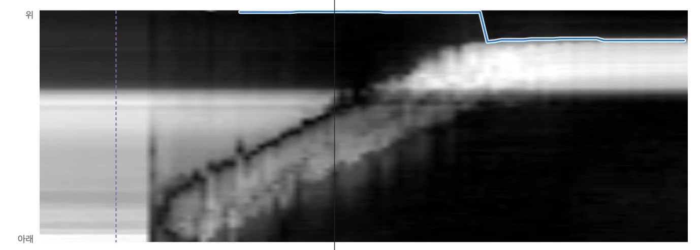
크게 보기
원본 영상 오른쪽 위의 "크게 보기"는 원본 영상을 따로 띄운 창에서 원본 크기로 보여 줍니다. 그 창은 다른 모니터로 옮길 수 있고, 재생 위치는 편집기와 늘 같습니다. 편집기를 나가면 닫힙니다.
6. 선 고치기
가장 흔한 순서는 이렇습니다. 초안이 틀린 구간을 범위로 골라 지우고, 연필이나 점 잇기로 맥락 이미지의 경계를 따라 다시 그립니다. 그린 곳은 판정이 바로 다시 계산됩니다. Ctrl+Z로 언제든 되돌릴 수 있습니다.
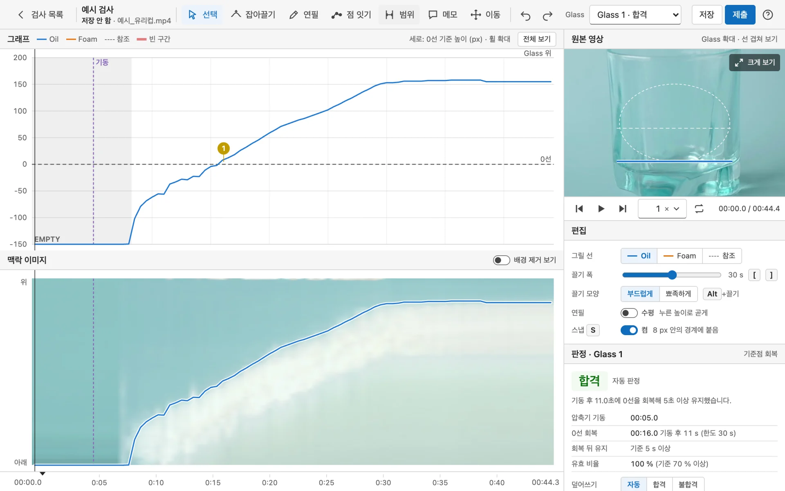
그릴 선
편집 칸의 "그릴 선"에서 Oil, Foam, 참조 중 하나를 고릅니다. 연필, 점 잇기, 지우기는 고른 선에 적용됩니다. 거품 경계를 남기려면 Foam을 고르고 그립니다. Foam 선과 참조선은 판정에 쓰지 않습니다.
범위로 골라 지우기
- R(범위)을 누르고, 그래프나 맥락 이미지를 가로로 끌어 시간 범위를 고릅니다. 양 끝을 끌어 조정할 수 있습니다.
- Delete를 누르면 범위 안의 "그릴 선"이 지워집니다. Oil 선을 지운 곳은 다시 그릴 때까지 빈 구간입니다.
범위를 고르면 편집 칸에 그 범위로 할 수 있는 일이 나옵니다. 범위는 Esc나 다른 도구로 풉니다. 선택 도구로 바꾸면 범위가 남습니다.
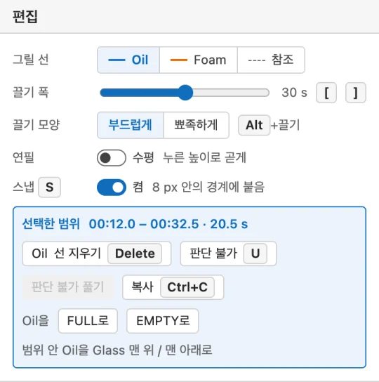
연필
- 누른 채 끌면 지나간 시간 범위의 "그릴 선"을 끈 자리대로 다시 그립니다.
- 스냅(S, 처음엔 켜짐)이 켜져 있으면 선이 8 px 안의 경계에 붙습니다. 가장 강한 경계가 거품 위나 반사일 때는 스냅을 끄고 그립니다.
- 편집 칸의 "수평"을 켜면 누른 높이로 수평선만 그립니다.
- 휠로 확대해서 그리면 더 정확합니다.
점 잇기
- 맥락 이미지나 그래프를 클릭해 점을 찍습니다. 포인터 자리에 찍으면 생길 연결을 미리 보여 줍니다.
- 스냅이 켜져 있으면 점 사이를 곧게 이은 선에서 8 px 안의 경계를 따라 잇고, 경계가 없으면 곧게 잇습니다. 스냅을 끄면 곧게 잇습니다.
- Enter로 확정하면 첫 점부터 마지막 점까지가 "그릴 선"이 됩니다. Backspace는 마지막 점을 빼고, Esc는 취소합니다.
- 길고 완만한 경계는 연필보다 점 몇 개가 빠를 때가 많습니다. 끊어진 선 조각을 이을 때는 그래프 위에 점을 찍습니다.
잡아끌기
- 선을 잡아 위아래로 끕니다. 거의 맞는 선을 조금 옮길 때 씁니다.
- [ ]로 끌기 폭을 줄이고 늘립니다. 편집 칸에 지금 폭이 나옵니다.
- Alt를 누른 채 끌거나 끌기 모양에서 "뾰족하게"를 고르면, 잡은 곳이 뾰족하게 꺾입니다.
선택 도구로 선 고르기
선택 도구(V)는 편집기를 열면 켜져 있는 도구로, 아무것도 바꾸지 않습니다. 선을 클릭하면 끊김 없이 이어진 선 하나가 골라지고, "그릴 선"도 그 선으로 바뀝니다.
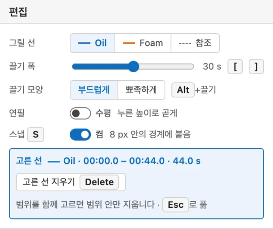
FULL과 EMPTY
유면이 Glass 위로 넘치거나 아래로 내려가 경계가 보이지 않으면, Oil 선을 Glass 맨 위(FULL)나 맨 아래(EMPTY)에 둡니다.
- 연필, 점 잇기, 잡아끌기로 맨 위나 맨 아래에서 화면 6 px 안을 그리면 정확히 그 끝에 붙습니다. 붙는 동안 그 가장자리가 Oil 색으로 보입니다.
- 범위를 고르고 "FULL로" / "EMPTY로"를 누르면 범위 안 Oil 선을 한 번에 맨 위 / 맨 아래로 그립니다.
판단 불가
영상이 가려지거나 흔들려 유면을 판단할 수 없는 구간은 범위를 고르고 U를 누릅니다. 빗금으로 표시되고, 판정에서 무효 샘플로 셉니다. "판단 불가 풀기"는 고른 범위만큼 표시를 지웁니다.
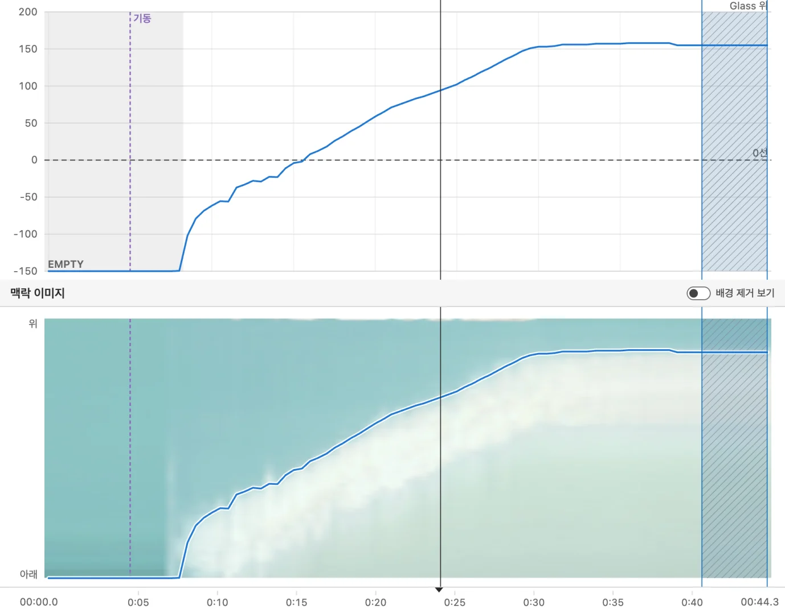
복사와 붙여넣기
압축기를 켜고 끄는 시험처럼 같은 모양이 되풀이될 때 씁니다.
- 범위를 고르고 Ctrl+C: 범위 안의 Oil과 Foam 선을 빈 샘플까지 그대로 복사합니다. 복사한 Glass에만 붙여 넣을 수 있습니다.
- Ctrl+V: 복사본이 포인터를 따라다니고, 클릭한 시각에서 시작해 붙습니다. 높이는 복사한 그대로이고 스냅은 쓰지 않습니다. Esc로 끝냅니다.
- "반복 붙여넣기…": 첫 시작, 주기, 끝을 넣으면 붙을 자리를 미리 보여 주고, Enter로 한 번에 붙입니다. 첫 복사본을 끌어 첫 시작을 옮길 수 있습니다. 실행 취소 한 번에 모두 되돌아갑니다.
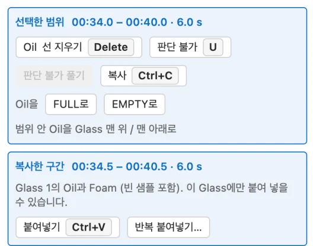
붙인 곳도 새로 그린 선으로 칩니다. 붙인 뒤에는 선이 맥락 이미지의 경계와 맞는지 꼭 봅니다.
메모
M을 누르면 이 Glass의 메모 목록이 열립니다. "추가"를 누르고 그래프나 맥락 이미지를 클릭하면 그 시각에 메모를 남깁니다. 메모를 누르면 그 시각으로 가서 고칠 수 있고, 체크하고 "삭제"를 누르면 지웁니다. 메모는 보고서에 번호 핀과 목록으로 나옵니다.
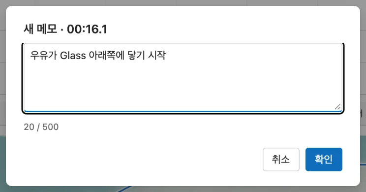
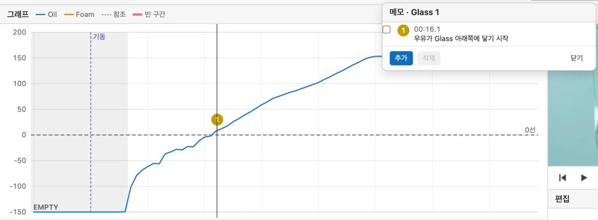
기동 표시, 빈 구간, 저장
- 압축기 기동 옮기기: 잡아끌기 도구로 그래프의 "기동" 표시를 좌우로 끌면 기동 시각이 바뀌고 판정이 다시 계산됩니다(0.1초 단위, 분석 범위 안).
- 빈 구간 찾기: N은 다음, Shift+N은 이전 빈 구간으로 갑니다. 오른쪽 칸 아래의 "이전 빈 구간" / "다음 빈 구간"도 같습니다.
- 실행 취소: Ctrl+Z, 다시 실행은 Ctrl+Shift+Z.
- 저장: Ctrl+S 또는 "저장". 저장하지 않고 검사 목록으로 나가거나 창을 닫으면 먼저 묻습니다. 다음에 검사 목록에서 열면 저장한 곳부터 이어집니다.
범위 바꿔 다시 분석
분석 범위를 바꿔야 하면 오른쪽 칸 아래 분석 칸의 "범위 바꿔 다시 분석…"을 누릅니다. 저장한 편집 중 새 범위와 겹치는 곳은 남고, 새로 생긴 범위만 초안으로 채웁니다. 새 범위 밖의 편집은 사라지므로, 시작하기 전에 무엇이 사라지는지 알려 줍니다.
7. 판정 확인하기
판정 읽기
판정은 Oil 선과 판정 규칙으로 자동 계산되고, 선을 고칠 때마다 바로 다시 계산됩니다.
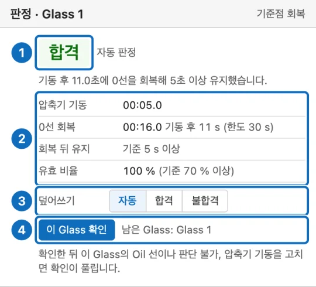
- 판정: 합격, 불합격, 또는 검토 필요(유효 비율이 기준보다 낮을 때). 옆에 자동 판정인지 직접 판정인지 나옵니다.
- 근거: 압축기 기동, 0선 회복(기동 후 몇 초), 회복 뒤 유지, 유효 비율. 기준점 아래 / 위 유지 방식에서는 가장 긴 위반과 허용 높이가 나옵니다.
- 덮어쓰기: 직접 판정할 때 씁니다.
- "이 Glass 확인".
이 예시는 초안 그대로일 때 "검토 필요"였습니다. 초안이 경계가 약한 앞부분을 빈 구간으로 남겨 유효 비율이 기준보다 낮았고, 그 뒤 한동안은 Glass 맨 위를 따라갔습니다. 두 곳을 경계를 따라 다시 그리자 합격이 되었습니다.
직접 판정하기
자동 판정에 동의하지 않으면 "덮어쓰기"에서 합격이나 불합격을 고르고 이유를 씁니다. 이유는 꼭 써야 합니다. 보고서에는 최종 판정과 이 이유가 "판정 사유"로 나오고, 자동 판정은 이 검사의 기록으로만 남습니다. "자동"을 고르면 자동 판정으로 돌아갑니다.
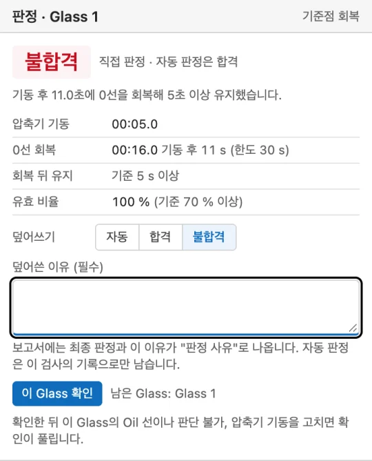
이 Glass 확인
선과 판정을 다 봤으면 "이 Glass 확인"을 누릅니다. Glass 고르기에 판정이 붙고, 모든 Glass를 확인하면 "제출"이 켜집니다.
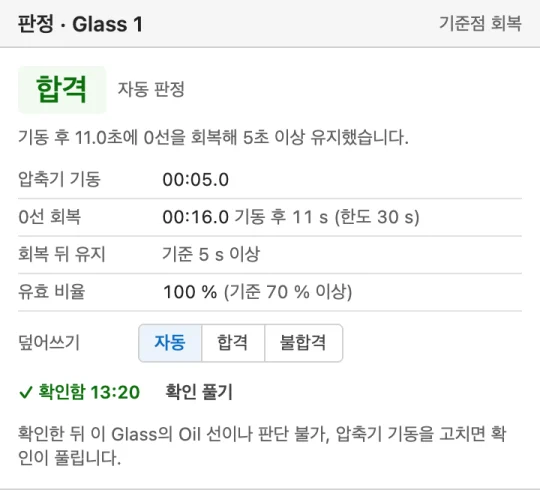
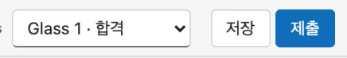
확인한 뒤 그 Glass의 Oil 선, 판단 불가, 압축기 기동을 고치면 확인이 풀립니다. 다시 보고 확인합니다.
8. 제출과 보고서
제출하기
"제출"을 누르면 Glass별 판정과 확인 시각, 보고서 머리글(압축기 모델, 시험 종류)이 나옵니다. 머리글은 여기서 고치면 바로 저장됩니다. "제출"을 누르면 저장하지 않은 편집까지 그 버전(v1, v2, …)으로 잠그고, 보고서와 함께 검사 폴더의 versions에 남깁니다.
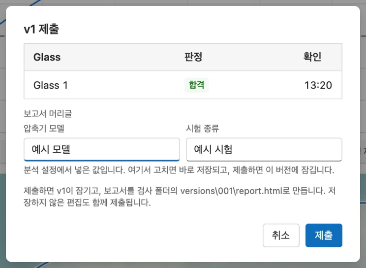
제출한 버전
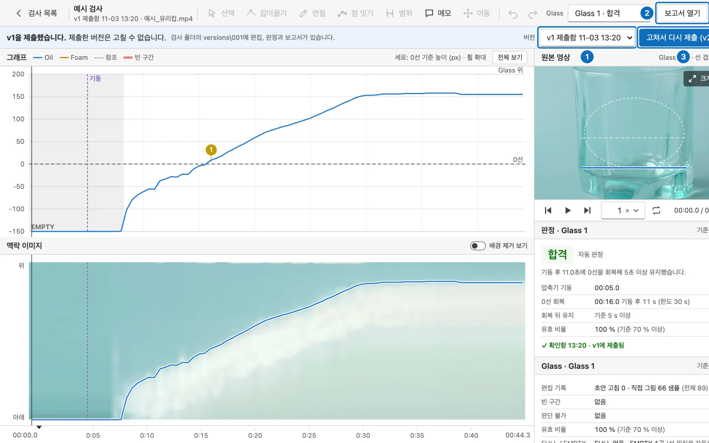
- 버전: 예전 버전을 읽기 전용으로 엽니다. 그 뒤에 다시 분석했다면 그 버전의 보고서로 봅니다.
- "보고서 열기": 보고 있는 버전의 보고서를 기본 브라우저로 엽니다.
- "고쳐서 다시 제출": 다음 버전을 고칩니다(아래).
보고서
보고서는 인터넷 없이 브라우저에서 열리는 HTML 파일입니다. 머리글, Glass별 판정, 그래프와 맥락 이미지(편집한 선), 판정 근거와 주요 시각, 메모가 들어 있습니다. 직접 판정한 Glass에는 "판정 사유"가 나옵니다.
- 브라우저에서 인쇄(Ctrl+P)하고 "PDF로 저장"을 고르면 A4 가로 PDF가 됩니다.
- 보고서 파일은 검사 폴더의
versions\001\report.html(버전마다 번호)에 있습니다. 다른 사람에게 줄 때는 이 파일이나 인쇄한 PDF를 씁니다.
고쳐서 다시 제출
제출한 뒤 고칠 곳을 찾았으면 "고쳐서 다시 제출"을 누릅니다. 마지막 버전을 이어받아 다음 버전을 고치고, 다시 확인하고 제출합니다. 제출한 버전은 그대로 남습니다. 검사 목록에는 검사마다 한 줄이 있고, 마지막에 제출한 버전과 판정이 나옵니다.
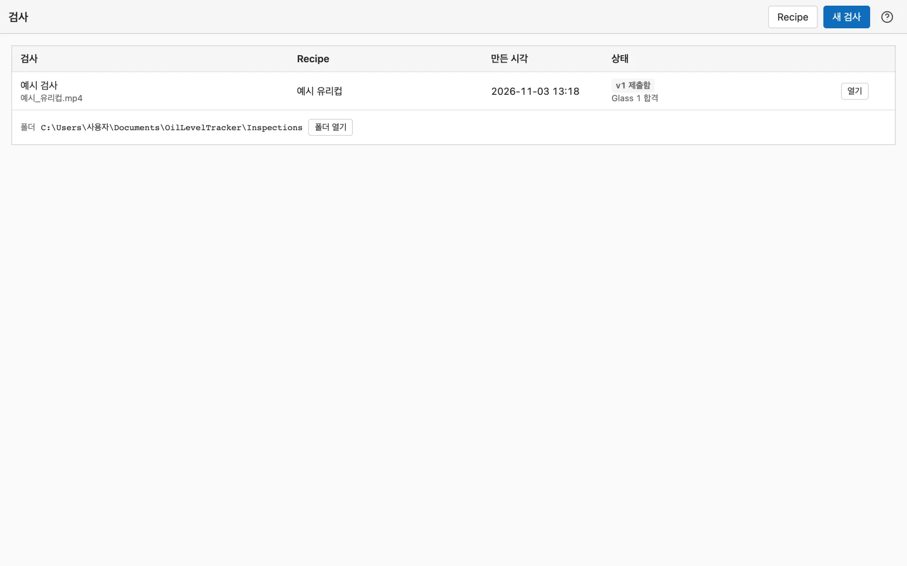
9. 문제가 생겼을 때
- 편집기 위에 "원본 영상을 찾을 수 없습니다"가 나온다
- 분석한 뒤 영상을 옮기거나 이름을 바꾸거나 지운 경우입니다. 영상을 원래 자리에 되돌려 놓고 "다시 확인"을 누릅니다. 내용이 바뀐 영상이면 분석할 때와 다르다는 경고가 나옵니다.
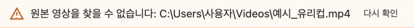
- Recipe 고르기에서 Recipe를 고를 수 없다
- Recipe와 영상의 해상도가 다릅니다. 이유가 그 줄에 나옵니다. 카메라 설정이 바뀌었으면 그 영상으로 새 Recipe를 만듭니다.
- "분석 시작"이나 "저장"이 되지 않는다
- 위쪽의 "문제 N개"와 빨간 글씨를 확인합니다. 예를 들어 기준점 회복 Glass가 있는데 압축기 기동 시각이 없거나, 분석 범위 밖에 있으면 시작하지 않습니다.
- 검사 목록에 "분석 실패"가 있다
- 이유가 옆에 나옵니다. 열어서 설정을 확인하고 다시 시작합니다.
- 검사 목록에 "분석 안 됨"이 있다
- 분석을 시작하지 않았거나 취소한 검사입니다. 설정은 남아 있으니, 열어서 "분석 시작"을 누릅니다.
- 초안이 엉뚱한 경계를 따라간다
- 흔한 일입니다. 6장대로 범위를 골라 지우고 다시 그립니다. Recipe의 타원이 Glass 테두리나 반사를 덮고 있으면, 다음 검사부터는 타원을 유면이 오르내리는 범위로 줄여 봅니다.
- 선이 경계에 붙지 않거나 엉뚱한 곳에 붙는다
- 스냅(S)을 끄거나 켭니다. 휠로 확대해서 그리면 더 정확합니다.
- "제출"이 꺼져 있다
- 모든 Glass를 확인해야 켜집니다. "제출"에 포인터를 올리면 남은 Glass가 나옵니다.
- 제출한 뒤 틀린 곳을 찾았다
- "고쳐서 다시 제출"로 다음 버전을 만듭니다(8장). 이전 버전과 그 보고서는 그대로 남습니다.
- 여기에 없는 문제가 생겼다
- 배포 담당자에게 알려 주세요. 화면 캡처, 앱 버전(도움말 창 아래), 검사 이름, 그리고 기록 파일
app.log를 함께 보내 주시면 원인을 찾기 쉽습니다. 기록 파일은 탐색기 주소 표시줄에%LOCALAPPDATA%\OilLevelTracker를 붙여 넣으면 나오는 폴더에 있습니다.